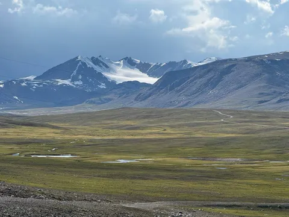
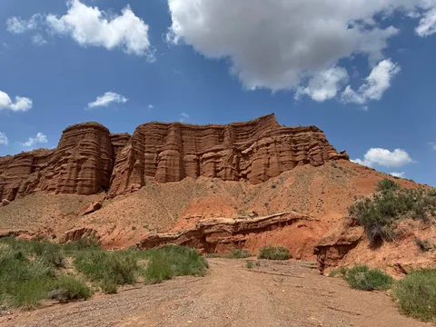
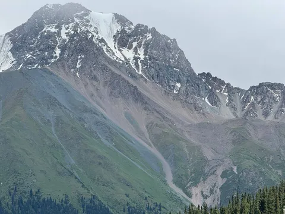
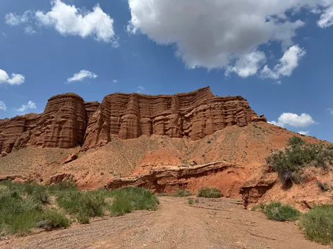
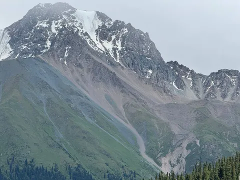
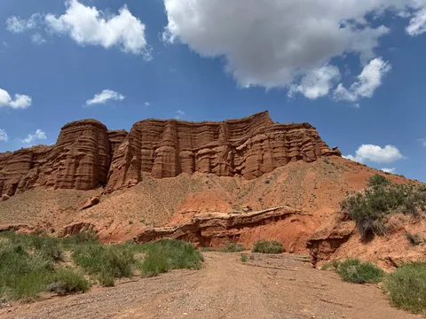
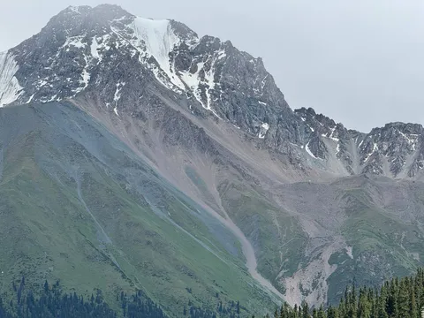

- очень недооцененная страна с точки зрения красоты природы. Я был в Швейцарии, Норвегии, Дагестане, на Камчатке (и еще много где), так вот тут - ничуть не хуже. Хотя, мало кому приходит в голову поехать в Кыргызстан, просто потому что он не в top-of-mind.
Кстати, раз уж про недооцененные страны начал - еще одна страна, про которую мало кто вспоминает, и напрасно - это Румыния. Там офигенная природа и милейшие городки. Очень рекомендую - Трансфэгэрэшское шоссе, Трансильванию, Брашов, Сигишоару - в общем, северо-западную часть Румынии.
Вернемся к Кыргызстану и обратимся к Википедии: "средняя высота над уровнем моря — 2750 м. Более половины территории располагается на высотах от 1000 до 3000 м и примерно треть — на высотах от 3000 до 4000 м". Думаю, этого достаточно, чтобы понять, что если вы любите горы - вам надо сюда.
Слова тут не нужны. В горах даже ворчать не хочется. Кыргызстан абсолютно восхитителен.
 

